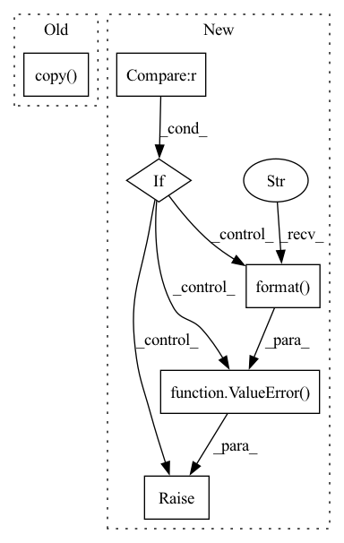

Pattern ID :32730
Before Change
"values respectively."
)
// check y column: soft
history = df.loc[df.loc[:, "y"].notnull()].copy()
if history.shape[0] < 2:
raise ValueError("Dataframe has less than 2 non-NaN rows.")
df.loc[:, "y"] = pd.to_numeric(df.loc[:, "y"])
if np.isinf(df.loc[:, "y"].values).any():After Change
df.loc[:, name] = df[name].replace([np.inf, -np.inf], np.nan)
// if df[name].isnull().any():
// raise ValueError("Found NaN in column {name!r}".format(name=name))
if df.loc[df.loc[:, name].notnull()].shape[0] < 1 :
raise ValueError( "Dataframe column {name!r} only has NaN rows.".format(name=name))
if df.index.name == "ds":
df.index.name = None
df = df.sort_values("ds")In pattern: SUPERPATTERN
Frequency: 3
Non-data size: 6
Instances Fragment ID: 95107707
Project Name: ourownstory/neural_prophet
Commit Name: 7ca21bf1403e63ae988aaa0e0a0eefdbacf572aa
Time: 2020-06-21
Author: oskar.triebe@merantix.com
File Name: neuralprophet/df_utils.py
M Class Name: AnonimousClass
N Class Name: AnonimousClass
M Method Name: check_dataframe(3)
N Method Name: check_dataframe(1)
M Parent Class:
N Parent Class:
M File Name: neuralprophet/df_utils.py
N File Name: neuralprophet/df_utils.py
M Start Line: 88
M End Line: 130
N Start Line: 76
N End Line: 119
Before Change
if isinstance(dets, torch.Tensor):
_dets = dets.detach().cpu().numpy()
else:
_dets = dets.copy()
assert isinstance(_dets, np.ndarray)
new_dets, inds = cpu_soft_nms(
_dets, Nt=Nt, method=method, sigma=sigma, threshold=min_score)After Change
type(dets)))
method_codes = {"linear": 1, "gaussian": 2}
if method not in method_codes :
raise ValueError( "Invalid method for SoftNMS: {}".format( method))
new_dets, inds = cpu_soft_nms(
dets_np,
iou_thr,
method=method_codes[method], Fragment ID: 95107711
Project Name: wxinlong/solo
Commit Name: dd2907ed70a9f29ecbe2fba75de735e96daae3a2
Time: 2018-11-26
Author: chenkaidev@gmail.com
File Name: mmdet/ops/nms/nms_wrapper.py
M Class Name: AnonimousClass
N Class Name: AnonimousClass
M Method Name: soft_nms(5)
N Method Name: soft_nms(5)
M Parent Class:
N Parent Class:
M File Name: mmdet/ops/nms/nms_wrapper.py
N File Name: mmdet/ops/nms/nms_wrapper.py
M Start Line: 34
M End Line: 48
N Start Line: 39
N End Line: 63
Before Change
if isinstance(df, list):
df_list = df.copy()
if local_modeling:
// Local Normalization
log.warning(
"Local normalization will be implemented in the future - list of data_params may break the code"After Change
df_list = copy_list(df)
if local_modeling:
// Local Normalization
if len(data_params) != len(df_list) :
raise ValueError(
"Local modelling requires normalization parameters for each dataframe. Received {} instead of {}".format(
len(data_params), len(df_list)
)
)
df_list_norm = list()
for df, df_data_params in zip(df_list, data_params):
df_list_norm.append(_normalization(df, df_data_params))
df = df_list_norm Fragment ID: 95107708
Project Name: ourownstory/neural_prophet
Commit Name: a9011b8941438aa629f432c9bd51eb8f5d8c2838
Time: 2021-12-10
Author: ourownstory@users.noreply.github.com
File Name: neuralprophet/df_utils.py
M Class Name: AnonimousClass
N Class Name: AnonimousClass
M Method Name: normalize(3)
N Method Name: normalize(3)
M Parent Class:
N Parent Class:
M File Name: neuralprophet/df_utils.py
N File Name: neuralprophet/df_utils.py
M Start Line: 269
M End Line: 274
N Start Line: 274
N End Line: 283